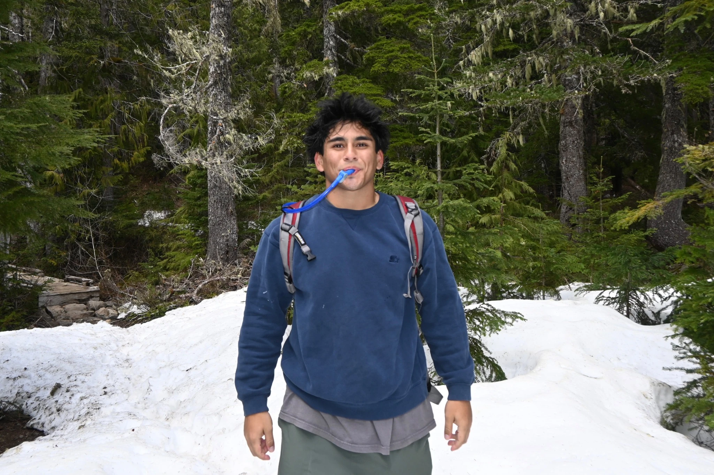
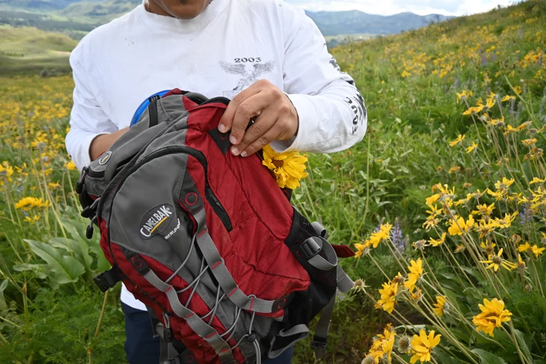
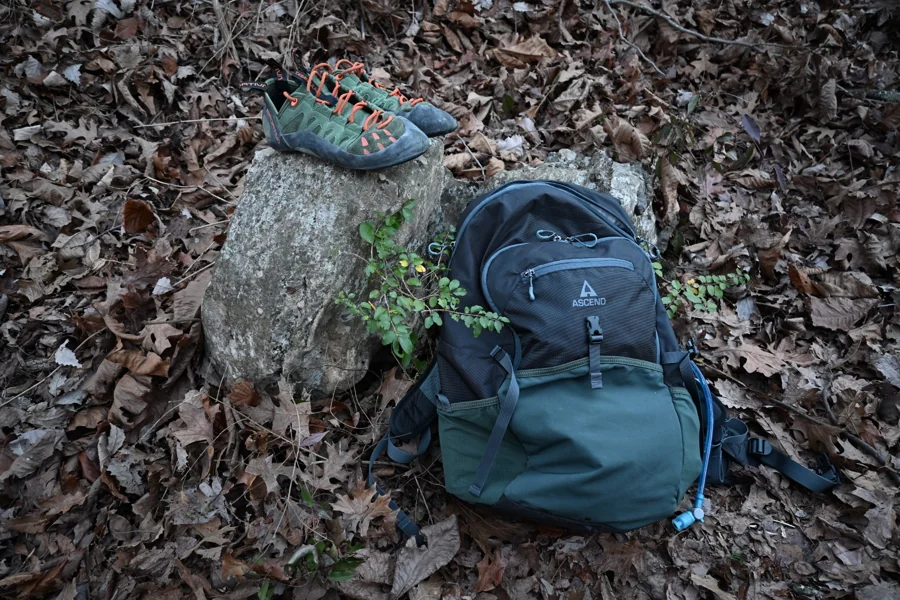

Along for the tripMy camera &
My camera &
trail essentials.
A camera for the moments I want to keep. A backpack for the miles in between. Here’s the gear that comes along on my travels.
Photography
Nikon Z50 II
The camera behind my travel photography, from the White Pass train to forest trails and wildlife in Alaska. This site is a collection of what I’ve captured along the way.
See my Alaska photographs →Hiking essentials

CamelBak backpack
This is the pack I brought on the snowy trail to Deer Lake. You can see the drinking tube and how the pack sits while I’m hiking in the photos from that day.
See it on the Deer Lake hike →
Ascend backpack
Another pack from my time outdoors, pictured here beside my climbing shoes. I wanted this page to show the equipment that actually comes along, including the quieter moments between photographs.
From my own kit · photographed on the trail